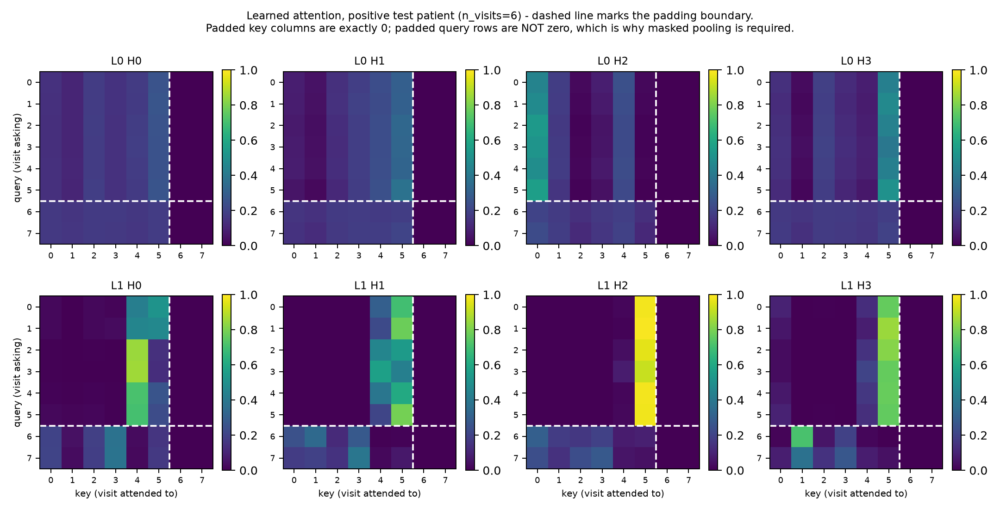

How to read this page
Every number, shape and framework default on this page was measured on the installed library (PyTorch 2.14.0+cpu, NumPy 2.5.2) rather than taken from documentation or memory. Where a claim is an inference rather than a measurement, it says so.
For a hands-on version, open notebooks/architecture_walkthrough.ipynb — 12 sections that print each claim below. For interactive attention, run streamlit run app.py.
1. Why reach for attention at all?
Start from the problem, not the architecture. The clearest case in this study is task V2-C, whose label is defined by src/10_taskV2_C.py:32:
has = (fill[0, 3] in [0.25, 0.75]) and (fill[-1, 2] > 0.65)
# diagnosis code at the FIRST visit WBC at the LAST visitThe label depends on two positions at once — visit 0 and visit k — and on nothing else about the record. Classical models are given a flattened row (src/10_taskV2_C.py:40):
age, sex, n_visits, hr_last, sbp_last, wbc_last, diag_last, wbc_trend, hr_trendNotice what is absent: there is no diag_first column. A logistic regression or random forest cannot recover a quantity that was never given to it, so no amount of tuning lifts it past a ceiling. Attention can, because one query can reach a specific distant position and multiply it against another.
src/10_taskV2_C.py. It demonstrates that attention can bind two distant positions, which is a real and well-documented property of the architecture. It is not evidence about rheumatoid arthritis, flare prediction, or any clinical outcome. Nothing in this repository tests a clinical hypothesis.
2. Glossary
Every term this page uses, defined once. Nothing here depends on any other project.
d_model=32 split into 4 heads gives each head 8 dimensions.num_layers deep.dim_feedforward, activate, narrow back. 64 here.eps=1e-5.3. What kind of transformer this is
This is an encoder-only transformer. It reads the entire record at once and emits one prediction. That single classification removes most of what you would meet in a text model:
| Ingredient | Text generation | Here | Why |
|---|---|---|---|
Vocabulary + nn.Embedding | yes | no | Features arrive as numbers; nothing to look up. |
| Causal mask | yes | no | The label is computed from the complete record. Hiding later visits from earlier ones would only discard information. |
| Language-model head (one logit per vocabulary entry) | yes | no | One risk score per patient, not a distribution over words. |
| Generation loop | yes | no | There is nothing to generate. |
| Padding mask | yes | yes | Patients have 2–8 visits here (3–12 in the V2 tasks); sequences are ragged. |
| Pooling to a single vector | no | yes | One prediction per patient, so the sequence axis must collapse. |
| Class-imbalance weighting | no | yes | About 9.8% of patients are positive. |
nn.TransformerEncoderLayer defaults to norm_first=False — verified on the installed version. That is post-normalisation, the original 2017 arrangement. Most current text models use pre-normalisation (norm_first=True), which trains more stably at depth. With only 2 layers here it makes no practical difference, but it is a genuine difference from a modern text model and is visible in docs/plots/ discussions of training behaviour.
4. The pipeline, stage by stage
The entire model is src/02_transformer_ehr.py:52-70. Measured shapes for a batch of 4 patients with 8 visit slots:
class EHRTransformer(torch.nn.Module):
def __init__(self, d_in=6, d_model=32, nhead=4):
super().__init__()
self.input_proj = torch.nn.Linear(d_in, d_model) # 55
self.pos_emb = torch.nn.Parameter(torch.randn(1, 8, d_model)*0.1) # 57
enc_layer = torch.nn.TransformerEncoderLayer(
d_model=d_model, nhead=nhead, dim_feedforward=64, batch_first=True) # 58
self.encoder = torch.nn.TransformerEncoder(
enc_layer, num_layers=2, enable_nested_tensor=False) # 59
self.classifier = torch.nn.Linear(d_model, 1) # 60
def forward(self, x, mask):
h = self.input_proj(x) + self.pos_emb[:, :x.size(1), :] # 63
pad_mask = (mask == 0) # 65 True = ignore
h = self.encoder(h, src_key_padding_mask=pad_mask) # 66
mask_e = mask.unsqueeze(-1) # 68
pooled = (h * mask_e).sum(1) / mask_e.sum(1).clamp(min=1) # 69
return self.classifier(pooled).squeeze(-1) # 70input x (B, 8, 6) B patients, 8 visit slots, 6 features
mask (B, 8) 1.0 = real visit, 0.0 = padding
after input_proj (B, 8, 32) 6 features -> 32 hidden coordinates
after + pos_emb (B, 8, 32) same shape; position added, not concatenated
after encoder (B, 8, 32) block preserves the sequence length
after pooling (B, 32) the sequence axis is gone
after classifier (B,) one logit per patient
squeeze(-1) removes the trailing dimension left by Linear(..., 1).The mask is a float tensor, not a boolean. It is used twice for two different jobs: negated into a padding mask (mask == 0, because the framework's convention is True = ignore), and multiplied into the hidden states during pooling. The two conventions are opposite, which is why line 40 exists at all.
total parameters: 17,601
input_proj (Linear 6->32) 224 ( 1.3%)
encoder (2 layers) 17,088 ( 97.1%)
classifier (Linear 32->1) 33 ( 0.2%)
pos_emb (Parameter) 256 ( 1.5%)
per encoder layer:
self_attn.in_proj_weight (96, 32) <- Q, K and V in one matrix
self_attn.in_proj_bias (96,)
self_attn.out_proj.weight (32, 32) <- recombines the heads
self_attn.out_proj.bias (32,)
linear1.weight (64, 32) <- feed-forward, widen
linear1.bias (64,)
linear2.weight (32, 64) <- feed-forward, narrow
linear2.bias (32,)
norm1.weight (32,)
norm1.bias (32,)
norm2.weight (32,)
norm2.bias (32,)97% of the model is the two transformer blocks. The input and output layers are rounding errors — everything this model knows about medicine lives in the encoder.
5. Inside one encoder block
Nothing in src/02_transformer_ehr.py writes a block out by hand. The whole thing is supplied by nn.TransformerEncoderLayer, which contains, in the order reported by the installed version:
Submodules, in order
self_attn MultiheadAttention heads = 4
linear1 Linear 32 -> 64
dropout
linear2 Linear 64 -> 32
norm1 LayerNorm(32)
norm2 LayerNorm(32)
dropout1
dropout2Defaults actually in force
norm_first = False -> post-LN
dropout = 0.1
eps = 1e-05
activation = ReLU
dim_feedforward = 64 (2x d_model)Each block does: normalise → attention → add the input back → normalise → feed-forward → add back. Because norm_first=False, the normalise step precedes each sub-layer rather than following it.
TransformerEncoder(layer, num_layers=2) deep-copies the single layer you pass it. Verified: layers[0] is layers[1] is False, their parameters live at different addresses, and they only start out numerically identical. They are not weight-tied, so the model really is 2 blocks deep.
Also verified: model.encoder.norm is None, so there is no extra normalisation layer after the final block. That is the framework default and is consistent with post-LN, where each block already ends normalised.
6. Masks — and the subtlety that matters
| Kind | What it hides | Present? | Where |
|---|---|---|---|
| Padding mask | Filler visit slots, so they cannot be attended to | yes | src_key_padding_mask, line 66 |
| Causal mask | Later positions, for left-to-right generation | no | would be is_causal=True |
| Missing-feature mask | An absent measurement inside a real visit | no | imputed at generate_synthetic_ehr.py:41 |
Padding and padding-as-value are genuinely ambiguous here: a padded slot holds 0.0, and so do real visits for sex=0 or diag=0. Nothing in the numbers distinguishes "not coded" from "does not exist". The mask is the only thing that knows.
The mask is one-directional, and that surprises people
- A padded key column is exactly zero. Nobody attends to a filler slot.
- A padded query row is not zero — it still sums to 1.0. A filler slot computes a full, legitimate-looking distribution over the real visits and produces a genuine output vector.
So a padded slot manufactures a plausible summary of the patient. Masked mean pooling at lines 68–69 is what stops those fabrications reaching the prediction. It is load-bearing correctness, not a stylistic choice.

Real learned weights, one positive validation patient with 6 visits. Produced by src/02_transformer_ehr.py; regenerate with python src/02_transformer_ehr.py. Drawn from the validation split so the figure cannot be accused of test peeking.
What the heads actually specialised in
Averaged over 1,000 patients, here is the share of each head's attention mass landing on the first and last real visit. Chance level is roughly 1/n_visits ≈ 0.243.
| Head (layer 1) | → first visit | → last visit | ratio | Reads |
|---|---|---|---|---|
| 0 | 0.257 | 0.229 | 0.89 | neither end, mildly |
| 1 | 0.270 | 0.213 | 0.79 | neither end, mildly |
| 2 | 0.180 | 0.477 | 2.65 | recency |
| 3 | 0.395 | 0.236 | 0.60 | baseline / history |
wbc[-1] - wbc[0] (generate_synthetic_ehr.py:42) — a difference between the first and the last visit. Nothing told the model about visits being special. It allocated one head to the most recent measurement and a different head to the opening one, which is precisely the two operands that quantity needs. No attention plot is more convincing evidence that the mechanism works than this, and it takes 30 lines of NumPy to produce.
It is also why the transformer is competitive here at all — though on this particular label a flattened logistic regression still wins, because it is handed wbc_trend pre-computed. See §7.
7. From visits to one prediction
Pooling
mask_e = mask.unsqueeze(-1) # (B,8,1)
pooled = (h * mask_e).sum(1) / mask_e.sum(1).clamp(min=1) # (B,32)Multiplies each visit's 32-dim summary by its real/padding flag, sums over visits, divides by the number of real visits. The clamp(min=1) guards against dividing by zero for a hypothetical patient with no visits at all.
Head and loss
self.classifier = torch.nn.Linear(d_model, 1) # 32 -> 1
pos_weight = torch.tensor(
[(len(y_tr) - y_tr.sum()) / y_tr.sum()]) # 9.24
criterion = torch.nn.BCEWithLogitsLoss(pos_weight=pos_weight)BCEWithLogitsLoss applies the sigmoid internally, so there is no separate sigmoid step and the arithmetic stays stable for extreme logits.
Why the weighting is not optional
Prevalence is 0.0978 in the held-out test split — about 44 positives out of 450. Unweighted, the cheapest way to reduce loss is to predict "no" every time. Measured pos_weight on the training split is 9.24.
The AUPRC floor matters when reading results: a model predicting "no" always scores AUPRC 0.098. Any reported figure should be compared against that, not against 0.
Like for like
The script fits the classical baselines on the identical split so this is a fair comparison rather than 5-fold CV against a single holdout. On this task the transformer's own value does not come from the label:
| Model (identical 2099/451/450 split) | Test AUROC | Test AUPRC |
|---|---|---|
| Logistic regression | 0.922 | 0.571 |
| Random forest | 0.893 | 0.501 |
| This transformer (d=32, 2 layers) | 0.888 | 0.520 |
wbc[-1] - wbc[0] (generate_synthetic_ehr.py:42), and both baselines receive wbc_trend as a column. So a flattened linear model already holds the quantity the label is built from, and it wins. This is the same ordering the scaling experiments report, and it is the expected result — see §1 for the task where the transformer's advantage is real.
8. Limitations, and what was fixed
An earlier revision of this page listed five evaluation problems in src/02_transformer_ehr.py. Four were fixable and are fixed; one is not fixable at all. Both lists are kept so the change is auditable.
Fixed
| Was | Now | Effect |
|---|---|---|
| The best epoch was chosen by AUROC on the test set | Stratified 70/15/15 split; the epoch is chosen on validation AUROC and test metrics are computed once from the selected checkpoint | Removes the optimistic bias. It also changed the conclusion — see below. |
| Torch was never seeded | np.random.seed(42) and torch.manual_seed(42) at the top of the script |
Verified: two consecutive runs produce a byte-identical checkpoint and identical metrics. |
CosineAnnealingLR(T_max=30) but 35 epochs ran, so the learning rate hit 0.0 at epoch 30 and then climbed back |
T_max=EPOCHS, driven off the same constant |
The schedule now completes instead of restarting. |
| Classical baselines used 5-fold CV while the transformer used one 80/20 split | Logistic regression and random forest are now fitted on the identical split, reconstructed from the same sequences | §7 is now a controlled comparison. |
README.md:25 claimed 12 epochs |
Corrected to 35, matching the code | Documentation now matches behaviour. |
Not fixable here
| Issue | Why it stands |
|---|---|
| The data is synthetic | Every cohort is generated in src/ from a label rule we wrote. These results show what the architecture can do on a controlled pattern. They say nothing about clinical validity, and no amount of protocol repair changes that. |
| The other task scripts keep the old protocol | src/05–src/10 still select on test and still run 12 epochs. They were left alone to keep this branch's diff reviewable, and their reported numbers inherit the bias described above. Fixing them means re-running every cohort. |
9. Three things this project previously got wrong
Two were claims about attention that the code did not support; the third was an evaluation protocol that flattered the model. All are fixed. The evaluation issues are itemised in §8.
The "attention visualization" that visualised no attention
A block at the foot of src/02_transformer_ehr.py (previously lines 94–102, before this branch restructured the file) carried the comment "attention visualization: grab last layer attention" and then plotted a patient's WBC series. No attention weights were ever read out.
They could not be. On the installed version, nn.TransformerEncoder.forward() does not accept need_weights at all:
model.encoder(h, need_weights=True)
# TypeError: TransformerEncoder.forward() got an unexpected keyword argument 'need_weights'The layer also calls attention internally with need_weights=False. So src/attention_utils.py captures, via a forward pre-hook, the tensor attention actually receives, then replays it with need_weights=True. Capturing rather than reconstructing also sidesteps a subtlety: TransformerEncoderLayer.forward contains two branches, one passing norm1(x) to attention and one passing raw x. Measured on this configuration in eval mode, attention receives the un-normalised input.
in_proj_weight/in_proj_bias on the captured tensor and evaluating softmax(QKT/√head_dim + padding mask) matches the extracted weights to 4.5e-08. So the helper is not an approximation of the attention operation — it is that operation.
The playground that showed random numbers
app.py built its "Attention map" from np.random.randn plus a hand-added self/neighbour bias, and the page's own note conceded the next step would be to replace it with learned Q, K and V. A visitor had no way to tell the difference.
It now loads results/best_transformer.pt (79 KiB, 17,601 parameters) and plots genuine per-layer, per-head weights, with a patient picker, the visit table, and a breakdown of how much attention each visit receives. The old synthetic map survives as a second tab, explicitly labelled a schematic of the operation rather than a trained model.
dropout=0.1 inside attention: row sums came out as 1.111 with scattered zeros at valid positions. Attention read out in train mode is meaningless. Second, both app.py and the notebook reused the variable n_visits / m for two different things in one shared scope, so a slider in one section silently rebound the array another section was still indexing.
10. What real EHR data would change
The synthetic setup isolates a methodological question. Moving to a real registry breaks several assumptions at once.
| Assumption here | Real data |
|---|---|
| Visit index is the time axis, via a learned position table of 8 slots | Intervals between visits range from hours to years. Position 3 means nothing comparable across patients. Needs a time-aware encoding using real gaps, and an unbounded scheme rather than a fixed table. |
Five diagnosis codes, diag/4 | Thousands of ICD codes. That is a genuine vocabulary, so a real nn.Embedding becomes appropriate — the one thing this repository has none of. |
| One flat 6-number vector per visit | Heterogeneous types mixed in one vector (labs, codes, drugs, doses). Production systems typically embed each type separately and concatenate. |
Missingness imputed to a constant 0.7 | Whether a test was not ordered is itself informative. A separate missingness indicator usually beats a constant fill. |
| Test-selected best epoch, single random split | Needs a validation split, patient-level temporal splitting to avoid leakage, calibration, and external validation on a different site. |
Diagnosis code treated as an ordered scalar diag/4 | Codes are categorical. 0.25 and 0.75 have no arithmetic relationship. |
This page documents the implementation in this repository. It is not a claim that the approach is validated for any clinical use.
Explore it yourself
notebooks/architecture_walkthrough.ipynb— 12 sections that print every claim on this page, with a sandbox at the end.streamlit run app.py— interactive attention over real trained weights.python src/02_transformer_ehr.py— retrains and regenerates both attention figures (~10 min on CPU).- The study — results across all four tasks and every cohort size.